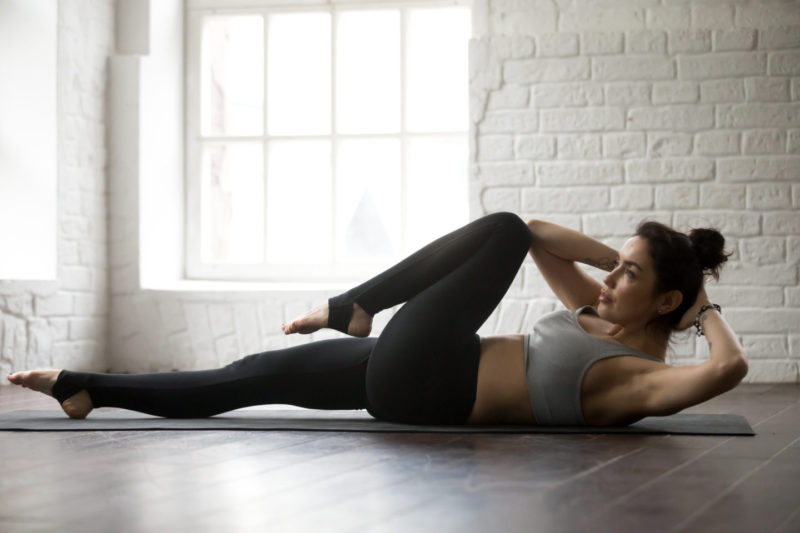

Упражнение «Велосипед»
Упражнение велосипед для пресса – одно из наиболее распространенных среди всех любителей спорта и здорового образа жизни. Оно направлено на развитие прямой и косых мышц живота. Упражнение велосипед примечательно тем, что в нем задействуются все мышцы брюшного пресса за счет динамической работы под разными углами.
Это делает велосипед наиболее комплексным упражнением на пресс в принципе. Ни в одном другом упражнении мы не можем сразу проработать все интересующие нас группы мышц. Если Вы ограничены во времени, но хотите как следует проработать мышцы пресса, это упражнение подойдет идеально.
Велосипед полюбился спортсменам со всего мира из-за технической простоты и разных по сложности вариаций выполнения. Немаловажно, что для него не требуется никаких тренажеров или дополнительного инвентаря – упражнение можно выполнять где и когда угодно.Велосипед полюбился спортсменам со всего мира из-за технической простоты и разных по сложности вариаций выполнения. Немаловажно, что для него не требуется никаких тренажеров или дополнительного инвентаря – упражнение можно выполнять где и когда угодно.v
Польза от упражнения велосипед
Упражнение велосипед для пресса можно отнести к базовым и наиболее эффективным движениям наравне со скручиваниями и подъемами ног в висе. Его эффективность обусловлена тем, что в работу включаются все волокна мышц пресса. Работа в ограниченной амплитуде и в режиме нон-стоп не дает мышцам расслабиться даже на секунду. Это приводит к гипоксии мышечных волокон и анаэробному гликолизу (мышцы быстрее достигают «отказа» за счет задержки в клетках молочной кислоты).
Упражнение нагружает все отделы мышц брюшного пресса. Оно также косвенно задействует широчайшие мышцы спины, подвздошно-поясничную мышцу, межреберные и зубчатые мышцы и ягодицы. Упражнение велосипед также сможет сделать Ваш пресс более рельефным и уменьшить объем талии. А в сочетании с низкоуглеводной диетой, регулярными силовыми и кардио тренировками и выполнением упражнения вакуум желаемый результат будет достигнут значительно быстрее.
Помимо очевидной пользы в проработке мышц пресса, упражнение велосипед может помочь Вам сбросить лишний вес за счет разгона метаболизма и ускорения окисления жировых клеток. Невозможно точно определить, сколько калорий сжигает упражнение велосипед, но любой опытный атлет подтвердит, что оно вызывает колоссальные энергозатраты, а из-за сильного чувства жжения бывает даже трудно стоять после последнего подхода. Разумеется, при соблюдении правильной техники, с которой Вы можете ознакомиться ниже.
Как правильно выполнять:
Существует несколько разновидностей выполнения этого упражнения: с вертикально поднятыми ногами, с удерживанием фитбола между ног и т. д. Сейчас мы рассмотрим самый распространенный и действенный метод, при котором атлет сокращает все мышцы брюшного пресса за счет одновременного движения ногами, руками и поворота корпуса, а нижняя часть спины при этом прижата к полу.
Давайте пошагово разберем теоретическую сторону вопроса о том, как делать упражнение велосипед для пресса, тем более, что с этим заданием справится даже новичок:
- Исходная позиция: атлет располагается лежа на полу (или гимнастическом коврике). Немного сгибаем ноги в
коленях (примерно под 45 градусов), руки скрещиваем на затылке. Поясницу плотно прижимаем к полу и не
отрываем на протяжении всего подхода, чтобы не создавать лишней осевой нагрузки на позвоночник и не
отвлекаться от концентрации на работающих мышцах.

- Делаем движение ногами, имитируя кручение педалей при езде на велосипеде. Движение должно быть не строго вертикальным, а проходить немного по дуге, так амплитуда движения будет больше, а значит, большее количество мышечных волокон (в том числе окислительных и медленных) будет включаться в работу. Колени должны двигаться по направлению к груди, одновременно с этим мы немного поворачиваем корпус, слегка округляя спину в грудном отделе, а локтем стараемся достать до колена. Работаем диагонально – правым локтем пытаемся достать до левого колена, левым локтем – до правого.
- Как только Вы выполнили движение локтей в сторону колена, полностью разогните эту ногу и согните другую. То же самое и с руками – выполните небольшое движение шеей в сторону, чтобы сменить локоть. Повторяйте это движение до тех пор, пока не почувствуете сильного чувства жжения в мышцах прессах – это основной индикатор того, что Вы все выполняете правильно. Главное – все делать плавно и подконтрольно, никакие резкие движения здесь недопустимы.
Велосипед – простое с технической стороны вопроса упражнение, однако, и в нем есть свои маленькие тонкости и секреты, соблюдая которые Вы сможете извлечь максимум пользы из этого упражнения. Не все из них очевидны на первый взгляд, поэтому многие новички выполняют это упражнение с техническими погрешностями. Чтобы это исправить, следует обратиться за помощью к грамотному персональному тренеру. Или просто прочитать нашу статью до конца, сэкономив свои время и деньги.
Ниже мы разберем, как НЕ стоит выполнять упражнение велосипед на пресс:- Выполняйте упражнение велосипед на твердой неподвижной поверхности. Если Вы делаете его на мягкой поверхности, то будете хуже контролировать движение и тратить силы на стабилизацию положения корпуса.
- Не создавайте осевую нагрузку на шейный отдел позвоночника. Выполняя велосипед, мы просто кладем ладони на затылок, но ни в коем случае не упираемся в него со всей силы. Да, Вам может показаться, что это несколько облегчает выполнение упражнения, но давайте не будем заниматься самообманом. Тренируя пресс, Вы должны работать прессом, а не чем-то другим.
- Соблюдайте равномерный темп на протяжении всего подхода, движение должно быть неторопливым и плавным. Если будете выполнять упражнение слишком быстро, Вы вряд ли сможете полностью сконцентрироваться на растяжении и сокращении мышц пресса.
- Соблюдайте естественные для Вашей анатомии углы, никакого дискомфорта быть не должно. Например, если чувствуете неприятные растягивающие ощущения в районе крестца, значит, поднимаете ноги слишком сильно, и следует уменьшить амплитуду движения.
- Не гонитесь за количеством повторений. В этом мало смысла, так как в подобных упражнениях нам прежде всего нужно хорошее сокращение мышц за счет налаженной нейромышечной связи. А количество повторов и подходов — это уже второстепенное дело. Другой вариант – попробуйте выполнять упражнение велосипед на время, например, начните с 30 секунд и плавно увеличивайте нагрузку. Так Вы подсознательно будете отдавать себе команду, что «отказ» мышц Вашего пресса должен наступить именно к моменту истечения времени.
- Не спешите использовать дополнительное отягощение в этом упражнении. Даже если Вы тренируетесь не первый год, и мышцы Вашего пресса сильны и хорошо развиты, начните выполнение велосипеда с классического варианта – так Вы лучше поймете биомеханику движения и научитесь правильно сокращать мышцы пресса под разными углами.
- Разнообразие в тренировочном процессе – ключ к постоянному прогрессу и спортивному долголетию. Не бойтесь экспериментировать и вносить в свою тренировочную программу что-то новое. Например, упражнение велосипед можно выполнять, как в рамках отдельной тренировки на пресс, в конце тренировки на спину или ноги, так и в составе кроссфит комплексов.